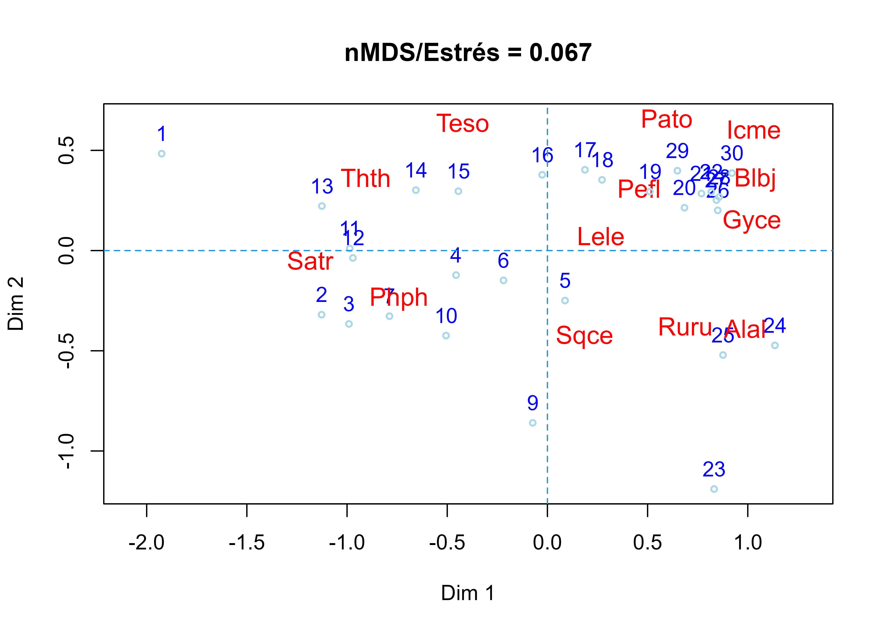
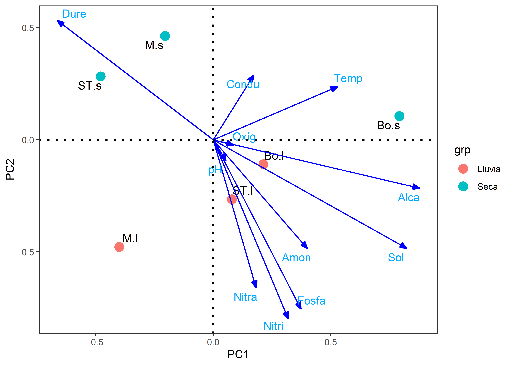
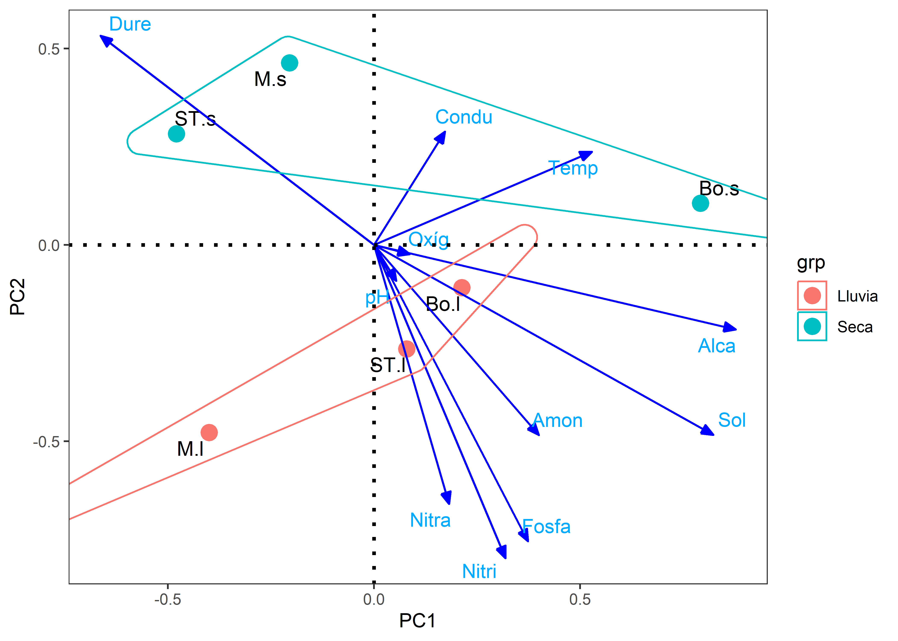
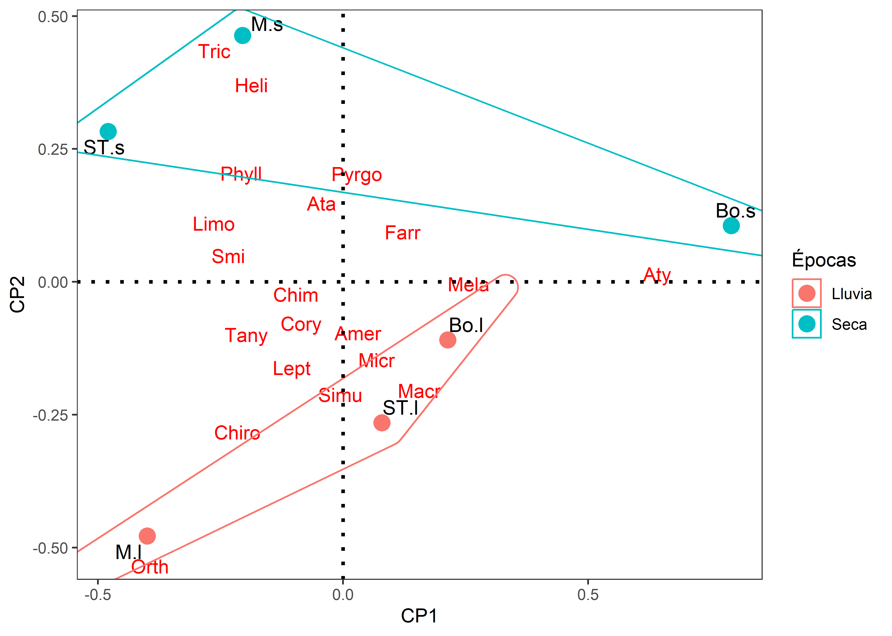
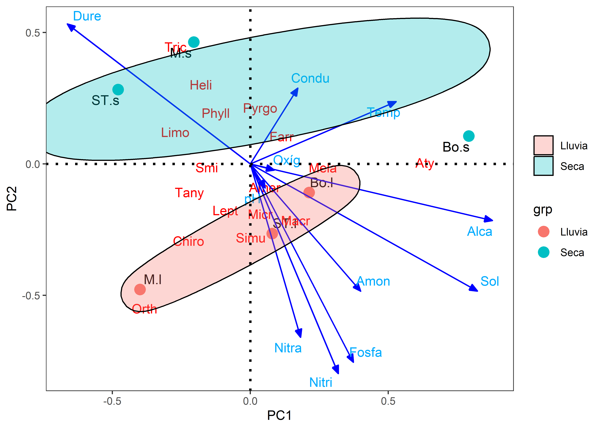

Taller4. PCA PNN Tayrona
Materiales requeridos para los talleres en clase
En los siguientes enlaces se podrán descargar archivos comprimidos de los dos talleres donde se pueden aplicar procedimientos de nàlisis de componentes principales en RStudio, con un caso guiado de quebradas del PNN Tayrona y variables ambientales asociadas (📰 Materiales del Taller 4.2_pca_PNNT).
Nota: una vez se descarguen los materiales, se requiere descomprimirlos antes de realizar cualquier procedimiento y seguir las orientaciones del docente para realizar los ejercicios requeridos. Al final de cada taller hay un cuestionario que servirá para afianzar el entrenamiento sobre esta temática.
Diapositivas en vivo - Slides.com

Caso guiado: Quebradas del PNN Tayrona
El siguiente ejemplo tiene en cuenta a la propuesta de Legendre & Gallagher (2001), en el cual se realiza una linealización de datos de abundancias de taxones, mediante la transformación de Hellinger, para poderlas ordenar en un PCA. Adicionalmente se incorporan las variables ambientales, con el objeto de analizar como estas caracterizan a las biológicas en gradientes espaciales y/o temporales. La base de datos que se utilizará es Tayrona.csv y el archivo de R es Tayrona.pca.r. Estos datos corresponden a un estudio realizado en el 2015, en el Parque Nacional Natural Tayrona (PNNT), valorando la fauna de invertebrados acuáticos y variables fisicoquímicas asociadas en diferentes quebradas de ese lugar. Estos datos hacen parte del trabajo realizado por Bruges Emilio (2022).
Ejercicio tomado de: Rodríguez-Barrios (2023) Enlace del libro
Enlace de los archivos del libro
Fuentes bibliográficas sobre el análisis de componentes principales:
PCA en factoextra - datanovia
Guía práctica sonre el PCA - datanovia
PCA para variables categóricas - R-bloggers
Capítulo PCA - Libro Numerical Ecology with R - Borcard et al. 2018
# Librerías requeridas
library(tidyverse)
library(kableExtra)
library(ggplot2)
library(reshape2)
library(ggrepel)
library(vegan)
library(factoextra)
library(ggsci)
library(ggforce)
library(concaveman)
library(corrplot)# Lectura de la base de datos "FQmarino"
datos <-read.csv2("Tayrona.csv",row.names=1) # file.choose()
# View(datos)
# str(datos)1) Ajuste de la base de datos y exploración Gráfica
1.1) Ajuste de las bases de datos fisiqcoquimica (amb) y biológica (tax.hel)
Usar “#| html-table-processing: none” para ajustar el render de las tablas en kbl
datos$Epoca = as.factor (datos$Epoca) # Convertir Epoca a factor
# Variables ambientales
amb= log10(datos[,c(2:12)]+1)
# Tabla
round(head(amb),1) %>%
kbl(booktabs = TRUE,
digits = 2,
longtable = TRUE) %>%
kable_classic(full_width = F)| Alca | Condu | Dure | Fosfa | Nitri | Nitra | Amon | Oxíg | pH | Sol | Temp | |
|---|---|---|---|---|---|---|---|---|---|---|---|
| M.s | 2.2 | 2.8 | 1.7 | 0.0 | 0.0 | 0.2 | 0 | 0.6 | 1.0 | 2.3 | 1.4 |
| ST.s | 2.1 | 2.8 | 1.7 | 0.1 | 0.1 | 0.2 | 0 | 0.8 | 1.0 | 2.4 | 1.4 |
| Bo.s | 2.2 | 3.0 | 1.7 | 0.1 | 0.1 | 0.5 | 0 | 0.8 | 1.0 | 2.6 | 1.4 |
| M.l | 2.2 | 2.9 | 1.7 | 0.1 | 0.1 | 0.5 | 0 | 0.7 | 1.0 | 2.5 | 1.4 |
| ST.l | 2.2 | 2.5 | 1.6 | 0.2 | 0.1 | 0.3 | 0 | 0.7 | 0.9 | 2.5 | 1.4 |
| Bo.l | 2.2 | 2.4 | 1.7 | 0.1 | 0.1 | 0.3 | 0 | 0.6 | 1.0 | 2.6 | 1.4 |
# Siete primeros Taxones transformados con Hellinger
tax.hel= decostand(datos[,c(13:63)],"hellinger")
# Tabla
round(head(tax.hel[,1:7]),2) %>%
kbl(booktabs = TRUE,
digits = 2,
longtable = TRUE) %>%
kable_classic(full_width = F)| Amb | Amer | Anch | Anac | Ancy | Argi | Ata | |
|---|---|---|---|---|---|---|---|
| M.s | 0.11 | 0.13 | 0.04 | 0.00 | 0.03 | 0.07 | 0.30 |
| ST.s | 0.07 | 0.07 | 0.00 | 0.08 | 0.00 | 0.04 | 0.14 |
| Bo.s | 0.04 | 0.06 | 0.00 | 0.00 | 0.00 | 0.00 | 0.06 |
| M.l | 0.09 | 0.17 | 0.10 | 0.00 | 0.00 | 0.00 | 0.00 |
| ST.l | 0.00 | 0.20 | 0.00 | 0.14 | 0.00 | 0.00 | 0.31 |
| Bo.l | 0.00 | 0.32 | 0.00 | 0.00 | 0.00 | 0.00 | 0.10 |
1.2) Exploración gráfica
Con datos crudos
# Matriz de correlaciones (M)
amb = datos[,c(2:12)]
biol = datos[,c(13:63)]
M <- cor(amb, biol)La Figura 1.1 muestra la relación entre las variables, a partir de figuras de elipses.
fig1 <-
corrplot(M,
method = "ellipse"
)
# Guardar figura 1
# ggsave("outputs/fig/fig1.png",
# fig1, width = 8,
# height = 5,
# dpi = 300)Con datos transformados
# Matriz de correlaciones con variables transformadas (M1)
M1 <- cor(amb, tax.hel)La Figura 1.2 muestra la relación entre las variables, con las transformaciones realizadas.
corrplot(M1,
method = "ellipse",
mar = c(0, 0, 0, 0),
tl.cex = 0.8,
cl.cex = 0.9)
2) PCA con paquete factoextra
2.1) Insumos numéricos del PCA
# PCA
pca1 <- prcomp(amb,scale.=T)
# Autovectores
summary(pca1)Importance of components:
PC1 PC2 PC3 PC4 PC5 PC6
Standard deviation 2.092 1.9075 1.3270 0.95127 0.56348 1.274e-15
Proportion of Variance 0.398 0.3308 0.1601 0.08226 0.02886 0.000e+00
Cumulative Proportion 0.398 0.7288 0.8889 0.97114 1.00000 1.000e+00# Autovectores
autovec <-
round(pca1$rotation[,1:2],3)
# Tabla
autovec %>%
kbl(booktabs = TRUE,
digits = 2,
longtable = TRUE) %>%
kable_classic(full_width = F)| PC1 | PC2 | |
|---|---|---|
| Alca | 0.39 | 0.02 |
| Condu | -0.09 | -0.45 |
| Dure | -0.42 | -0.05 |
| Fosfa | 0.39 | 0.04 |
| Nitri | 0.41 | 0.07 |
| Nitra | 0.20 | -0.44 |
| Amon | 0.24 | -0.36 |
| Oxíg | 0.00 | -0.22 |
| pH | -0.03 | -0.50 |
| Sol | 0.44 | -0.11 |
| Temp | 0.23 | 0.39 |
# Guardar datos
guardar_tabla(autovec, "autovec")# Scores - Coordenadas de las localidades
scores <-
round(pca1$x[,1:2], 3)
# Tabla
scores %>%
kbl(booktabs = TRUE,
digits = 2,
longtable = TRUE) %>%
kable_classic(full_width = F)| PC1 | PC2 | |
|---|---|---|
| M.s | -2.35 | 1.09 |
| ST.s | -2.65 | -0.14 |
| Bo.s | 1.94 | -2.22 |
| M.l | -0.24 | -2.34 |
| ST.l | 1.48 | 1.92 |
| Bo.l | 1.82 | 1.70 |
# Extracción de variables ambientales
amb1 = envfit(pca1,amb)
amb1
***VECTORS
PC1 PC2 r2 Pr(>r)
Alca 0.99874 0.05019 0.6670 0.16806
Condu -0.19283 -0.98123 0.7735 0.13333
Dure -0.99277 -0.12007 0.7844 0.14583
Fosfa 0.99451 0.10464 0.6629 0.17639
Nitri 0.98688 0.16144 0.7420 0.15278
Nitra 0.40735 -0.91327 0.8786 0.09306 .
Amon 0.54842 -0.83620 0.7246 0.19444
Oxíg -0.01747 -0.99985 0.1714 0.69444
pH -0.06248 -0.99805 0.9154 0.03750 *
Sol 0.97274 -0.23190 0.9008 0.04722 *
Temp 0.51277 0.85852 0.7961 0.12361
---
Signif. codes: 0 '***' 0.001 '**' 0.01 '*' 0.05 '.' 0.1 ' ' 1
Permutation: free
Number of permutations: 719# Coordenadas de variables ambientales
amb1 <-
round(scores(amb1, "vectors"), 3)
amb1 %>%
kbl(booktabs = TRUE,
digits = 2,
longtable = TRUE) %>%
kable_classic(full_width = F)| PC1 | PC2 | |
|---|---|---|
| Alca | 0.82 | 0.04 |
| Condu | -0.17 | -0.86 |
| Dure | -0.88 | -0.11 |
| Fosfa | 0.81 | 0.09 |
| Nitri | 0.85 | 0.14 |
| Nitra | 0.38 | -0.86 |
| Amon | 0.47 | -0.71 |
| Oxíg | -0.01 | -0.41 |
| pH | -0.06 | -0.96 |
| Sol | 0.92 | -0.22 |
| Temp | 0.46 | 0.77 |
2.2) Insumos gráficos
2.2.1) Contribución eje 1
La Figura 2.1 muestra las contribuciones de cada variable ambiental al pca.
fviz_contrib(pca1,choice="var",axes=1) +
theme_bw()
2.2.2) Elipses por cada periodo climático
La Figura 2.2 muestra la ordenación de las localidades por cada periodo climático.
fviz_pca_ind(pca1, geom.ind = "point",
col.ind = datos$Epoca, # Colores por grupo - periodo
palette = c("#00AFBB", "#E7B800", "#FC4E07"),
addEllipses = TRUE, ellipse.type = "confidence",
legend.title = "Groups") +
theme_bw()
2.2.3) Escala de contribuciones de las observaciones y las variables
La Figura 2.3 muestra las contribuciones de cada variable ambiental al pca.
fviz_pca_biplot(pca1,
# Observaciones (Sitios)
geom.ind = "point",
fill.ind = datos$Epoca, col.ind = "black",
pointshape = 21, pointsize = 2,
palette = "jco",
addEllipses = TRUE,
# Variables ambientales
col.var = "contrib",
gradient.cols = "RdYlBu",
legend.title = list(fill = "Epocas", color = "Contrib",
alpha = "Contrib")) +
theme_bw()
#—-
3) PCA con paquete ggplot2
Realización pca de los paquetes factoextra y ggbiplot Para gererar las coordenadas de los sitios y taxones
# Nuevamente el pca
pca3 <- prcomp(tax.hel)
summary(pca3)Importance of components:
PC1 PC2 PC3 PC4 PC5 PC6
Standard deviation 0.4713 0.3512 0.2953 0.2362 0.17749 1.057e-16
Proportion of Variance 0.4272 0.2372 0.1678 0.1073 0.06059 0.000e+00
Cumulative Proportion 0.4272 0.6643 0.8321 0.9394 1.00000 1.000e+003.1) Insumos numéricos
a) Coordenadas de los sitios y el factor “coord.sit”
coord.sit <- as.data.frame(pca3$x[,1:2]) # Coordenadas de los sitios
coord.sit$sitio <- rownames(coord.sit) # Crear una columna con nombres de los sitios
coord.sit$grp <- datos$Epoca # Adicionar columna de grupos por Epoca
# vista resumida de las coordenadas de sitios
head(coord.sit) %>%
kbl(booktabs = TRUE,
digits = 2,
longtable = TRUE) %>%
kable_classic(full_width = F)| PC1 | PC2 | sitio | grp | |
|---|---|---|---|---|
| M.s | -0.21 | 0.46 | M.s | Seca |
| ST.s | -0.48 | 0.28 | ST.s | Seca |
| Bo.s | 0.79 | 0.11 | Bo.s | Seca |
| M.l | -0.40 | -0.48 | M.l | Lluvia |
| ST.l | 0.08 | -0.27 | ST.l | Lluvia |
| Bo.l | 0.21 | -0.11 | Bo.l | Lluvia |
b) Coordenadas de los taxones “coord.tax”
coord.tax <- as.data.frame(pca3$rotation[,1:2]) # Dos primeros ejes
coord.tax$especies <- rownames(coord.tax) # Insertar columna con nombres de las especies
# vista resumida de las coordenadas de taxones
head(coord.tax) %>%
kbl(booktabs = TRUE,
digits = 2,
longtable = TRUE) %>%
kable_classic(full_width = F)| PC1 | PC2 | especies | |
|---|---|---|---|
| Amb | -0.05 | 0.06 | Amb |
| Amer | 0.01 | -0.13 | Amer |
| Anch | -0.04 | -0.04 | Anch |
| Anac | -0.02 | -0.02 | Anac |
| Ancy | -0.01 | 0.03 | Ancy |
| Argi | -0.03 | 0.07 | Argi |
c) Coordenadas de las ambientales “coord.amb”
amb1 = envfit(pca3,amb)
coord.amb = as.data.frame(scores(amb1, "vectors"))
coord.amb$amb <- rownames(coord.amb) # Insertar columna con nombres de las ambientales
# vista resumida de las coordenadas de taxones
head(coord.amb) %>%
kbl(booktabs = TRUE,
digits = 2,
longtable = TRUE) %>%
kable_classic(full_width = F)| PC1 | PC2 | amb | |
|---|---|---|---|
| Alca | 0.88 | -0.22 | Alca |
| Condu | 0.17 | 0.29 | Condu |
| Dure | -0.66 | 0.53 | Dure |
| Fosfa | 0.37 | -0.75 | Fosfa |
| Nitri | 0.32 | -0.80 | Nitri |
| Nitra | 0.18 | -0.66 | Nitra |
3.2) Insumos gráficos
3.2.1) Figura con vectores ambientales
La Figura 3.1 muestra la ordenación de las localidades, los taxones, las variables ambientales y los periodos climáticos.
library(ggrepel)
ggplot() +
# Sitios
geom_text_repel(data = coord.sit,aes(PC1,PC2,label=row.names(coord.sit)),
size=4)+ # Muestra el cuadro de la figura
geom_point(data = coord.sit,aes(PC1,PC2,colour=grp),size=4)+
scale_shape_manual(values = c(21:25))+
# Ambiental
geom_segment(data = coord.amb,aes(x = 0, y = 0, xend = PC1, yend = PC2),
arrow = arrow(angle=22.5,length = unit(0.25,"cm"),
type = "closed"),linetype=1, size=0.6,colour = "blue")+
geom_text_repel(data = coord.amb,aes(PC1,PC2,label=row.names(coord.amb)),colour = "#00abff")+
geom_hline(yintercept=0,linetype=3,size=1) +
geom_vline(xintercept=0,linetype=3,size=1)+
guides(shape=guide_legend(title=NULL,color="black"),
fill=guide_legend(title=NULL))+
theme_bw()+theme(panel.grid=element_blank())
3.2.2) Figura con vectores ambientales
La Figura 3.2 muestra la ordenación de las localidades, los taxones, las variables ambientales y los periodos climáticos.
library(ggrepel)
ggplot() +
# Sitios
geom_text_repel(data = coord.sit,aes(PC1,PC2,label=row.names(coord.sit)),
size=4)+ # Muestra el cuadro de la figura
geom_point(data = coord.sit,aes(PC1,PC2,colour=grp),size=4)+
scale_shape_manual(values = c(21:25))+
# Ambiental
geom_segment(data = coord.amb,aes(x = 0, y = 0, xend = PC1, yend = PC2),
arrow = arrow(angle=22.5,length = unit(0.25,"cm"),
type = "closed"),linetype=1, size=0.6,colour = "blue")+
geom_text_repel(data = coord.amb,aes(PC1,PC2,label=row.names(coord.amb)),colour = "#00abff")+
# Factor
geom_mark_hull(data=coord.sit, aes(x=PC1,y=PC2,group=grp,
colour=grp),alpha=0.30) +
geom_hline(yintercept=0,linetype=3,size=1) +
geom_vline(xintercept=0,linetype=3,size=1)+
guides(shape=guide_legend(title=NULL,color="black"),
fill=guide_legend(title=NULL))+
theme_bw()+theme(panel.grid=element_blank())
3.2.3) Figura con de elipses por concavidades - geom_mark_hull
La Figura 3.3 muestra la ordenación de las localidades, los taxones y los periodos climáticos.
ggplot() +
# Sitios
geom_text_repel(data = coord.sit,aes(PC1,PC2,label=row.names(coord.sit)),
size=4)+ # Muestra el cuadro de la figura
labs(x = "CP1", y = "CP2", color = "Épocas") + # Capa 4. Rótulos de los ejes
geom_point(data = coord.sit,aes(PC1,PC2,colour=grp),size=4)+ # Puntos de la figura
scale_shape_manual(values = c(21:25))+
# Taxones *valores de cero para caracteres de las flechas (arrow)
geom_segment(data = coord.tax,aes(x = 0, y = 0, xend = PC1, yend = PC2),
arrow = arrow(angle=0,length = unit(0,"cm"),
type = "closed"),linetype=0, size=0,colour = "red")+
geom_text_repel(data = coord.tax,aes(PC1,PC2,label=especies),colour = "red")+
# Factor
geom_mark_hull(data=coord.sit, aes(x=PC1,y=PC2,group=grp,
colour=grp),alpha=0.30) +
geom_hline(yintercept=0,linetype=3,size=1) +
geom_vline(xintercept=0,linetype=3,size=1)+
guides(shape=guide_legend(title=NULL,color="black"),
fill=guide_legend(title=NULL))+
theme_bw()+
theme(panel.grid=element_blank())
3.2.4) Figura con vectores de especies y ambientales
La Figura 3.4 muestra la ordenación de las localidades, los taxones, las variables ambientales y los periodos climáticos.
library(ggrepel)
ggplot() +
# Sitios
geom_text_repel(data = coord.sit,aes(PC1,PC2,label=row.names(coord.sit)),
size=4)+ # Muestra el cuadro de la figura
geom_point(data = coord.sit,aes(PC1,PC2,colour=grp),size=4)+
scale_shape_manual(values = c(21:25))+
# Taxones *valores de cero para caracteres de las flechas (arrow)
geom_segment(data = coord.tax,aes(x = 0, y = 0, xend = PC1, yend = PC2),
arrow = arrow(angle=0,length = unit(0,"cm"),
type = "closed"),linetype=0, size=0,colour = "red")+
geom_text_repel(data = coord.tax,aes(PC1,PC2,label=especies),colour = "red")+
# Ambiental
geom_segment(data = coord.amb,aes(x = 0, y = 0, xend = PC1, yend = PC2),
arrow = arrow(angle=22.5,length = unit(0.25,"cm"),
type = "closed"),linetype=1, size=0.6,colour = "blue")+
geom_text_repel(data = coord.amb,aes(PC1,PC2,label=row.names(coord.amb)),colour = "#00abff")+
# Factor
geom_mark_ellipse(data=coord.sit,aes(x=PC1,y=PC2,fill=grp,group=grp),alpha=0.30) +
geom_hline(yintercept=0,linetype=3,size=1) +
geom_vline(xintercept=0,linetype=3,size=1)+
guides(shape=guide_legend(title=NULL,color="black"),
fill=guide_legend(title=NULL))+
theme_bw()+theme(panel.grid=element_blank())
#—-
Taller de entrenamiento
Objetivo: Poner en práctica los conceptos vistos en este taller, realizando las siguientes opciones realizando un PCA que integgre a las variables biológicas (taxones) y a las ambientalñes de la base seleccionada.